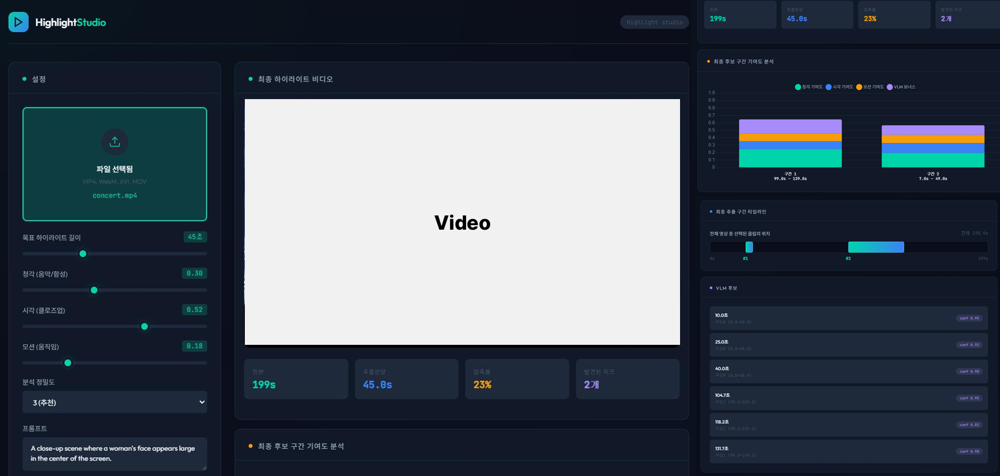
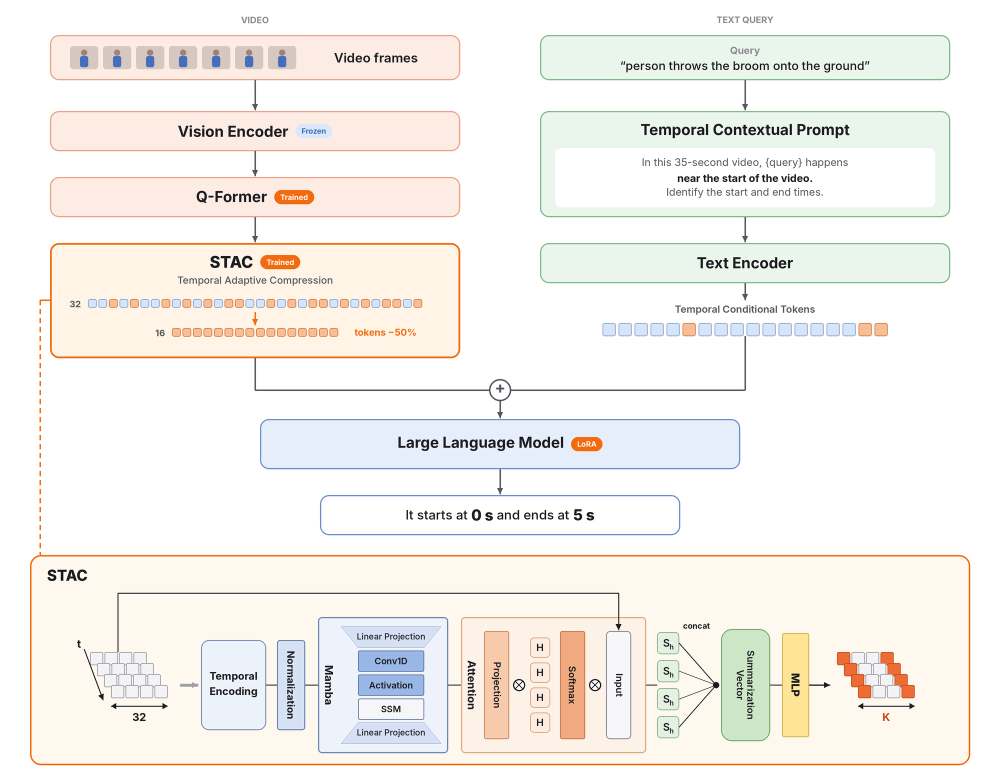

문제를 지표로 바꾸고, 결과를 수치로 검증하고, 근거를 바탕으로 방향을 수정해 온 AI · 데이터 프로젝트를 소개합니다.
MRR: 정답 페이지가 검색 결과의 앞쪽에 나오는 정도. 1에 가까울수록 상위에 검색됨.
| 질문 구분 | 답변 제공 | 답변 보류 |
|---|---|---|
| 답변 가능 16문항 | 13 | 3 |
| 답변 불가 4문항 | 0 | 4 |
전체 답변 판단 정확도 17/20문항 · 85.0%
문서/청크 테이블을 집계해 전처리 결과가 원본과 맞는지 확인
| 문서 | 페이지 | 청크 |
|---|---|---|
| copyright_contract.pdf | 17 | 19 |
| copyright_policy.pdf | 13 | 13 |
| copyright_project.pdf | 21 | 24 |
| digital_safety.pdf | 3 | 4 |
| public_mydata.pdf | 4 | 6 |
| 합계 5종 | 58 | 66 |
SELECT
d.filename,
d.category,
MIN(c.id) AS first_chunk_id,
COUNT(c.id) AS chunk_count
FROM documents d
LEFT JOIN chunks c
ON c.document_id = d.id
GROUP BY d.id, d.filename, d.category
ORDER BY d.filename;
목표 제한된 연산 자원에서 자연어 질의 기반 비디오 구간 탐색
대표 프레임 선별 및 프레임 간 관계 모듈 적용
성능 향상 → 연산량 증가, 접근 방향 수정수치형 시간 정보를 자연어 범주형 표현으로 전환, 경량 파인튜닝(LoRA) 기법 적용
시계열 맥락 기반 핵심 토큰 선별 모듈 설계
비디오 토큰 입력 50% 축소
| 모델 | mIoU | R1@0.5 | R1@0.7 |
|---|---|---|---|
| Mr.BLIP | 58.63 | 69.31 | 49.29 |
| Ours (TCP) | 62.41 | 70.16 | 44.06 |
| Ours (TCP+STAC) | 62.81 | 71.96 | 46.64 |
연산량 (TFLOPs)
추론 지연 (초)
ToMe 대비 연산량 24.6% 절감 · 추론 지연 14.3% 단축